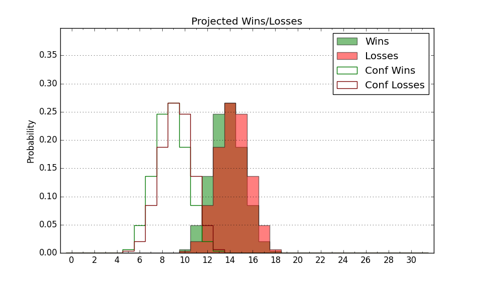

| Home | Game Probabilities | Conferences | Preseason Predictions | Odds Charts | NCAA Tournament |
| City: | Kennesaw, Georgia | |
| Conference: | Conference USA (3rd)
| |
| Record: | 5-4 (Conf) 10-9 (Overall) | |
| Ratings: | Comp.: -1.1 (173rd) Net: -0.6 (169th) Off: 102.9 (219th) Def: 103.5 (132nd) SoR: 0.0 (119th) |
| Remaining | ||||||
|---|---|---|---|---|---|---|
| Date | Opponent | Win Prob | Pred. | |||
| 2/6 | Western Kentucky (131) | 55.0% | W 78-77 | |||
| 2/8 | Middle Tennessee (114) | 50.6% | W 76-75 | |||
| 2/13 | @ Louisiana Tech (115) | 23.4% | L 68-76 | |||
| 2/15 | @ Sam Houston St. (171) | 35.0% | L 76-81 | |||
| 2/20 | UTEP (144) | 58.1% | W 75-73 | |||
| 2/22 | New Mexico St. (175) | 65.3% | W 74-69 | |||
| 2/27 | @ FIU (234) | 49.1% | L 73-74 | |||
| 3/2 | @ Liberty (82) | 13.0% | L 64-78 | |||
| 3/8 | @ Jacksonville St. (121) | 24.3% | L 70-78 | |||
| Previous | Game Score | |||||
| Date | Opponent | Win Prob | Result | Off | Def | Net |
| 11/9 | @California Baptist (162) | 32.0% | L 84-88 | 9.8 | -8.4 | 1.4 |
| 11/16 | Presbyterian (275) | 82.5% | W 85-67 | 11.1 | -0.9 | 10.2 |
| 11/20 | Abilene Christian (261) | 81.3% | W 84-78 | 12.1 | -15.3 | -3.2 |
| 11/24 | Rutgers (73) | 32.6% | W 79-77 | -2.9 | 9.7 | 6.9 |
| 11/28 | (N) UC Irvine (59) | 16.4% | L 59-76 | -11.2 | 6.9 | -4.3 |
| 11/29 | (N) Towson (178) | 51.2% | W 67-63 | 0.6 | 11.4 | 12.1 |
| 11/30 | (N) Kent St. (163) | 46.8% | L 60-67 | -11.9 | 1.2 | -10.7 |
| 12/6 | @Georgia St. (289) | 61.2% | W 81-77 | -2.3 | -2.4 | -4.7 |
| 12/18 | @Santa Clara (56) | 9.3% | L 74-94 | 5.5 | -7.5 | -2.0 |
| 12/21 | @San Jose St. (150) | 30.1% | L 65-89 | -13.1 | -7.5 | -20.6 |
| 1/4 | Jacksonville St. (121) | 52.2% | W 83-71 | 15.2 | -1.9 | 13.3 |
| 1/9 | @Middle Tennessee (114) | 23.1% | L 79-84 | 5.3 | -3.6 | 1.6 |
| 1/11 | @Western Kentucky (131) | 26.4% | L 69-85 | -6.7 | -2.4 | -9.2 |
| 1/16 | Sam Houston St. (171) | 64.7% | W 75-69 | -15.8 | 17.5 | 1.7 |
| 1/18 | Louisiana Tech (115) | 50.9% | W 78-76 | 16.2 | -2.6 | 13.6 |
| 1/23 | @New Mexico St. (175) | 35.5% | W 69-56 | 7.2 | 21.5 | 28.7 |
| 1/25 | @UTEP (144) | 28.9% | L 71-73 | -6.5 | 5.5 | -1.0 |
| 1/30 | Liberty (82) | 33.8% | L 68-76 | 0.8 | -8.0 | -7.2 |
| 2/1 | FIU (234) | 76.6% | W 73-67 | -5.4 | -2.7 | -8.1 |
| Stats & Trends | |||||
|---|---|---|---|---|---|
| Current | Day | Week | Month | Season | |
| Composite | -1.1 | -0.0 | -0.5 | +4.1 | +7.6 |
| Comp Rank | 173 | -1 | -4 | +42 | +77 |
| Net Efficiency | -0.6 | -0.0 | -0.8 | +3.4 | -- |
| Net Rank | 169 | -1 | -8 | +34 | -- |
| Off Efficiency | 102.9 | +0.0 | -0.1 | +0.9 | -- |
| Off Rank | 219 | -1 | -4 | -1 | -- |
| Def Efficiency | 103.5 | -0.0 | -0.7 | +2.4 | -- |
| Def Rank | 132 | +1 | -15 | +51 | -- |
| SoS Rank | 113 | -- | -13 | +3 | -- |
| Exp. Wins | 13.7 | +0.0 | -0.3 | +2.2 | +4.0 |
| Exp. Conf Wins | 8.7 | +0.0 | -0.3 | +2.2 | +2.0 |
| Conf Champ Prob | 1.8 | +0.0 | -1.9 | +1.1 | -0.3 |

| Advanced Stats | ||
|---|---|---|
| Stat | Value | Rank |
| Off Eff FG % | 0.487 | 244 |
| Off Ast Ratio | 0.123 | 310 |
| Off ORB% | 0.342 | 44 |
| Off TO Rate | 0.171 | 319 |
| Off FT Ratio | 0.390 | 57 |
| Def Eff FG % | 0.479 | 86 |
| Def Ast Ratio | 0.151 | 222 |
| Def ORB% | 0.277 | 146 |
| Def TO Rate | 0.132 | 290 |
| Def FT Ratio | 0.412 | 330 |